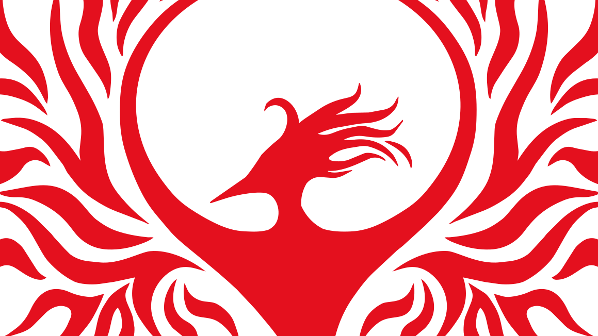

Projects

A History of Mistrust
A 30-slide Instagram series on why some communities struggle to trust doctors, from the Tuskegee study to community-led care. Includes the full slides, process work and sources.
View project →
Avery Ember Day Brand
My personal brand identity: logos, color, type and voice, built to hold up on dark and light backgrounds. See the complete system.
View project →
SECTION 6 Logo Design
Logo design for SECTION 6, an animated series pitch registered with the WGAW.
View project →
What you are looking at. Three tiles in one row from tablet width up (one column on phones). The tile and its 16:9 picture grow and shrink in step with the window width, up to the 1400px content cap, and the title and description stay one size. Only the room they sit in changes. The real tile styles from
brand.css, with a third tile after the Brand one. The picture is a close-up of the Phoenix, a 36%-tall window slid down so the head sits in the middle of the frame, cropped to the tile's 16:9 frame, in vivid red (#E4101E). The description is my short rewrite, as you asked. The Phoenix art is still the provisional trace.Decision for you: the thumbnail backdrop. The old dark red vanished on the site's dark tile, so it needed a light backdrop. In vivid red the Phoenix reads fine on the same #0A0A0A backdrop the Brand tile uses, so this mockup uses dark. Say if you want the light one instead. Switch the theme to check light mode.
Your answer: approve / approve with changes / reject. Write it in chat, and it gets recorded verbatim in the plan.